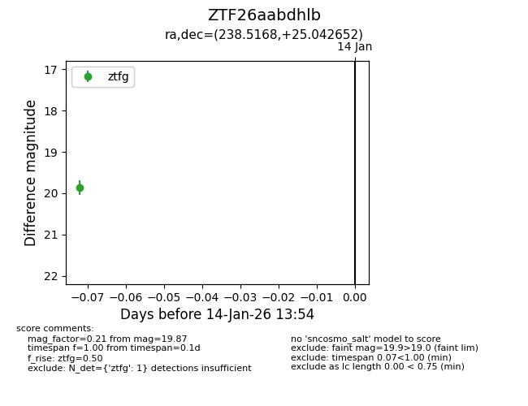
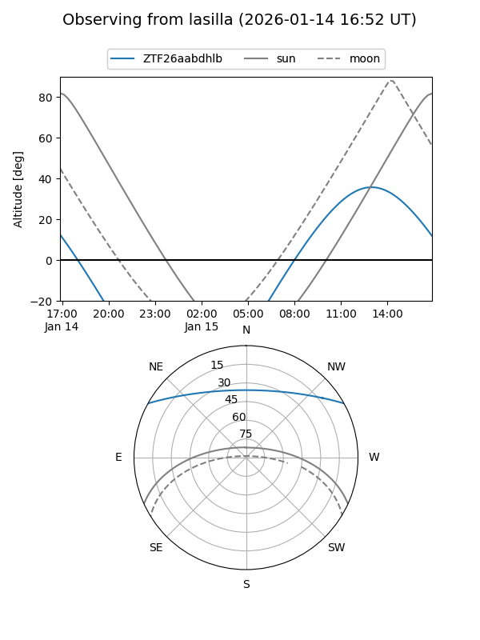
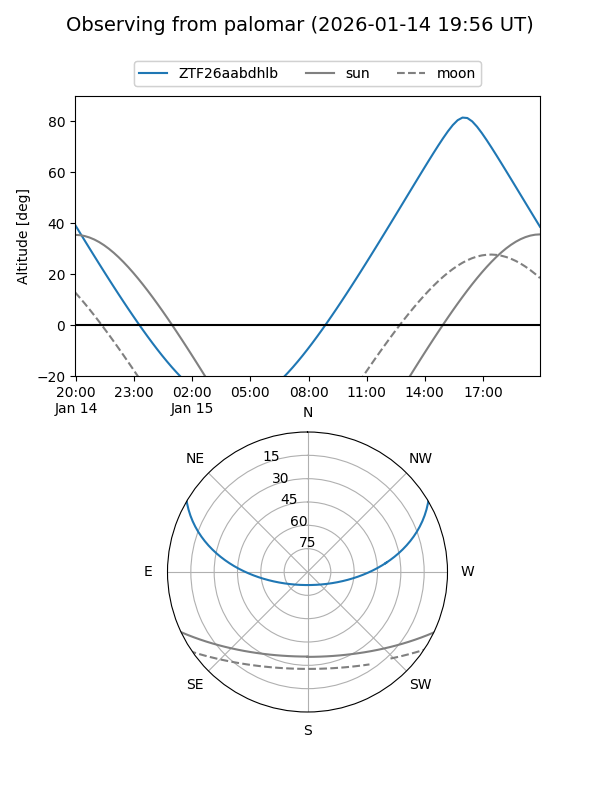

ZTF26aabdhlb
Target ZTF26aabdhlb at 2026-01-14 13:56
Aliases and brokers:
FINK: link
Lasair: link
ALeRCE: link
alt names
ZTF26aabdhlb (ztf,fink_ztf)
Coordinates:
equatorial (ra, dec) = 238.5168,+25.04265
equatorial (HMS+DMS) = 15:54:04.04,+25:02:33.55
galactic (l, b) = (40.6643,+49.16469)
Flags:
Photometry:
last ztfg=19.87
1 ztfg detections
Lightcurve

Visibility


Additional plots